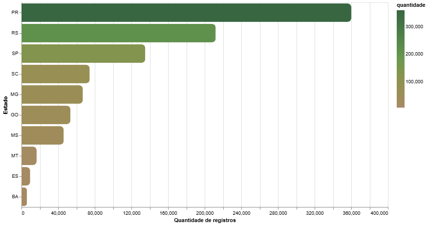
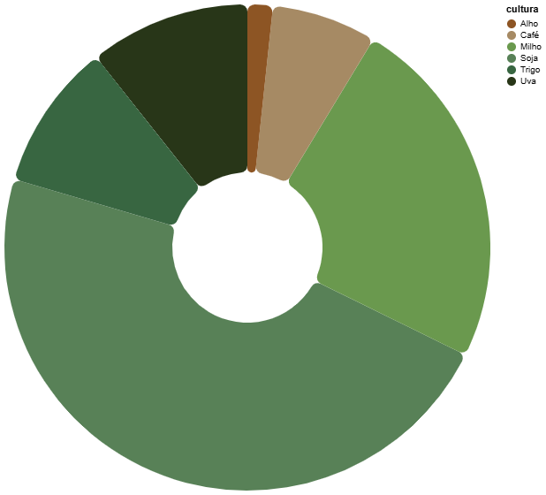
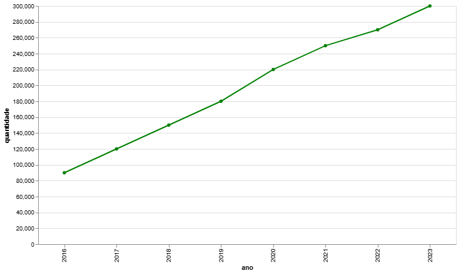
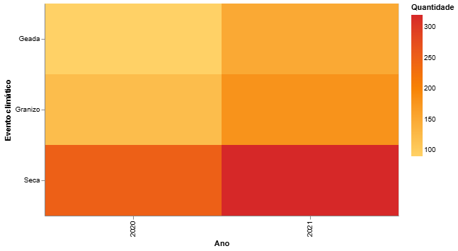
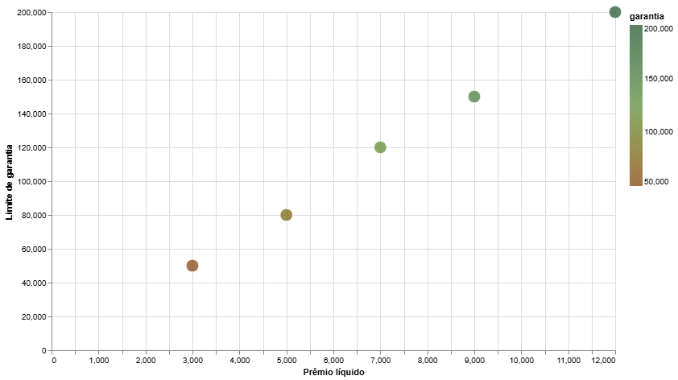
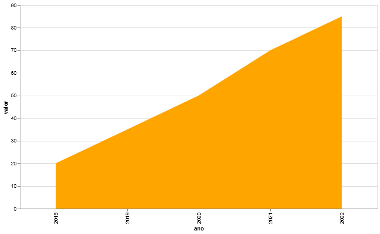
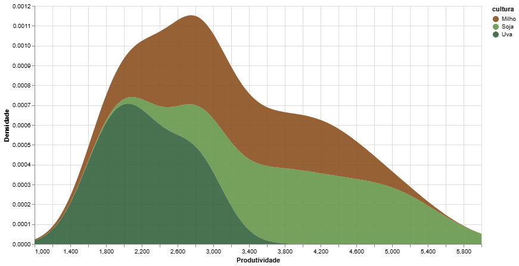
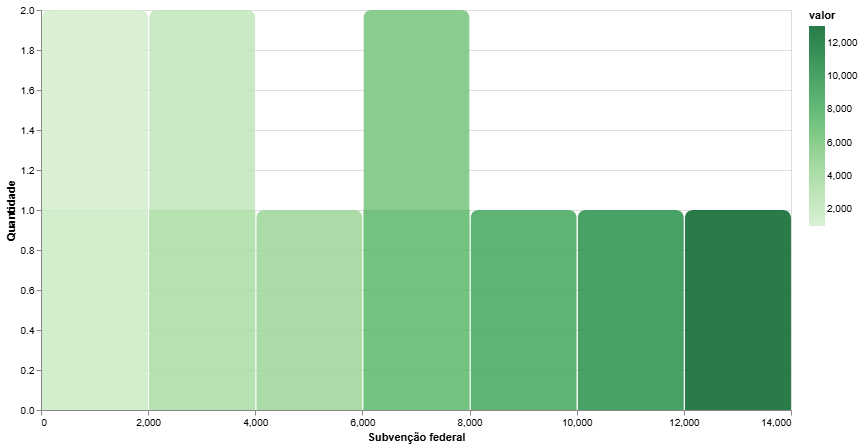

Estados com maior quantidade de registros
Predominância da região Sul, especialmente Paraná e Rio Grande do Sul.

Culturas agrícolas mais seguradas
Soja e milho lideram, seguidos por uva, trigo e café.

Evolução das operações ao longo dos anos
Crescimento gradual da adesão ao seguro rural.

Eventos Climáticos Frequentes
Seca e granizo são os eventos mais recorrentes.

Análise Financeira
Relação entre prêmio líquido e limite de garantia.

Subvenção Federal
Crescimento dos investimentos governamentais.

Produtividade por Cultura
Distribuição de produtividade entre milho, soja e uva.

Fluxo de Culturas ao longo dos anos
Soja e milho apresentam crescimento contínuo.

Sobre o projeto
Este site apresenta uma análise do Seguro Rural Brasileiro entre os anos de 2016 e 2024, utilizando visualizações de dados para facilitar a interpretação das informações.
O objetivo do projeto é explorar dados reais do setor agrícola, destacando a importância do seguro rural para a proteção da produção agrícola no Brasil.
As visualizações foram desenvolvidas com base em dados organizados e processados para fins acadêmicos.